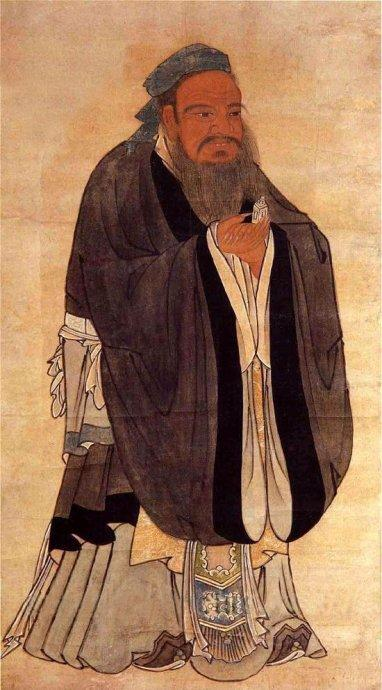
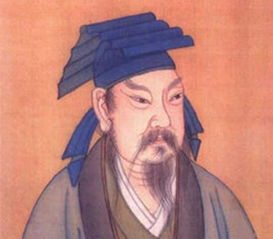
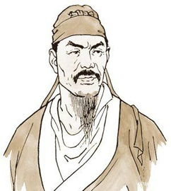
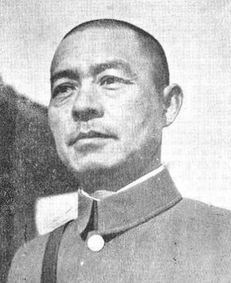

山东历史名人

孔子
孔子（公元前551年9月28日―公元前479年4月11日），子姓，孔氏，名丘，字仲尼，祖籍宋国栗邑（今河南省商丘市夏邑县），生于春秋时期鲁国陬邑（今山东省曲阜市）。中国著名的思想家、教育家、政治家，与弟子周游列国十四年，晚年修订六经，即《诗》《书》《礼》《乐》《易》《春秋》。被联合国教科文组织评为“世界十大文化名人”之首。孔子一生修《诗》《书》，定《礼》《乐》，序《周易》，作《春秋》。
扁鹊
秦越人（扁鹊，公元前407年-前310年），嬴姓，秦氏，名越人，又号卢医，一说为勃海郡郑（今河北任丘）人，再一说为齐国卢邑（今山东长清）人，春秋战国时期名医，被称为华夏医祖，河北省内丘县是扁鹊文化发祥地，是扁鹊的行医圣地、生前封地、逝后葬地。相传有名的中医典籍《难经》为扁鹊所著。

王羲之
王羲之（303年-361年，一作321年-379年），字逸少，琅琊临沂（今山东临沂）人，后迁会稽山阴（今浙江绍兴），晚年隐居剡县金庭，东晋时期著名书法家，有“书圣”之称，与其子王献之合称为“二王”。代表作有《兰亭序》。

辛弃疾
辛弃疾（1140年5月28日-1207年10月3日），原字坦夫，后改字幼安，号稼轩，山东东路济南府历城县（今济南市历城区遥墙镇四凤闸村）人。辛弃疾生于金国，少年抗金归宋，曾任江西安抚使、福建安抚使等职。后被主和派排挤，退隐山居。1207年病逝，追赠少师，谥号“忠敏”。辛弃疾词风“激昂豪迈，风流豪放”，代表着南宋豪放词的最高成就。现存词六百多首，有词集《稼轩长短句》等传世。

张自忠
张自忠，字荩臣，后改荩忱，汉族，山东省临清人，第五战区右翼集团军兼第三十三集团军总司令，中国国民党上将衔陆军中将，追授二级上将衔，著名抗日将领、民族英雄。光绪三十一年，张自忠父亲张树桂病逝，其母亲冯夫人成为一家之主。举家迁至临清。 光绪三十三年，十六岁的张自忠由母亲做主，与临清县咨议局议员李化南之女、十七岁的李敏慧结了婚。 光绪三十四年，他考入了临清高等小学堂。强调忠、孝、仁、义的传统道德从小便在张自忠的内心深深扎下了根。学习之余，张自忠常借一些小说来阅读消遣。最让他喜爱的是《三国演义》、《说唐》和《说岳精忠传》。